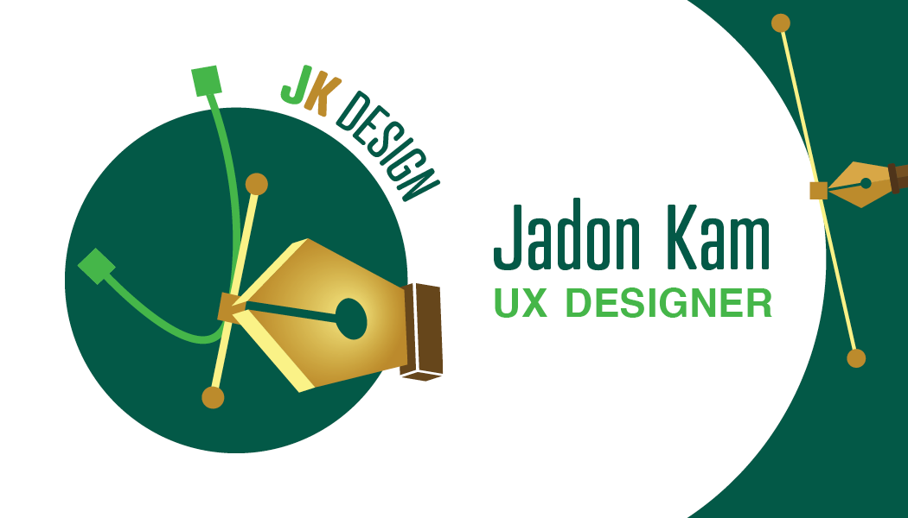

Jadon Kam: UX Design Resume
Skills and Tools
- Experienced in UX methods and techniques, such as user research, design thinking, user testing, and designing user-centred information architecture; Developed through many UX projects and classes
- Skilled in producing user-centred wire-frames, mock-ups, and prototypes using Adobe XD and Figma
- Experienced with designing and managing websites: Created my portfolio’s structure and content using HTML and CSS; implemented responsive design into the website
- Strong collaboration and teamwork skills gained through working with classmates and stakeholders on UX projects for 2+ years, working as a summer camp planner and counsellor for 3 years, and working as a part of my high school yearbook team for 2 years
- Strong creative and graphic design skills developed and demonstrated through 4 years of art classes, 2 years of being a high school yearbook graphic designer, and 2+ years of UX courses
Education
Wilfrid Laurier University, Bachelor or User Experience Design,
Brantford, Ontario, 2019 to Present
Experience
UX Projects
Designing a Website to Help Users Lower their Carbon Footprint through Plant-Based Meals
Wilfrid Laurier University, March 2021 (Design Competition & Solo Project)
- Conducted user research to learn about the needs and pain points of omnivores in eating more plant-based meals and the successes of vegans in removing meat and dairy from their diet; Created personas and user journey maps from this research
- Used user research insights, such as concerns users had about nutrition and costs of plant-based meals, to develop a website with recipes that use ingredients from weekly grocery store flyers and connects users to helpful resources on nutrition
- Tested the website with 6 users through 1-on-1 user testing sessions. Gave them potential tasks people would do on the website. Made improvements on the website’s navigation and content based on insights I gained from observing how they navigated the website and their feedback
Designing a Travel App for Families with Children
Adobe & Southwest Airlines, May 2021 (Design Competition & Team Project)
- Challenged with creating an app that could help users learn about their travel destinations while on a plane flight; Focused on families with children as many travel magazines and travel media are not useful or engaging for them
- Conducted user research to learn about the needs of families with children while planning vacations and travelling in their vacation destination; Created personas based on this research
- Collaborated with a classmate to brainstorm user-centred solutions and create wireframes, mockups, and prototypes. Developed an app prototype that would be engaging and informative for users
- Followed a design thinking process to empathize with families, define the problem based on user pain points and definitions of success, ideate and prototype a travel app, and test it with potential users
Work Experience
Summer Camp Counsellor
July to August 2019, July to August 2020, June to August 2021
- Collaborated with other camp staff through planning activities, lessons, games, and delivery packages to create an interactive online camp for about 50 campers
- Demonstrated strong oral communication skills through leading the team of camp counsellors in team meetings and independently leading a group of 8 campers through activities and lessons
- Collected feedback from my group of campers frequently to create activities that they would enjoy; Tested new games and activities with them to share activity ideas with other counsellors
- Conducted user research to determine the reopening plan for the church; created surveys to see when parents and church staff were comfortable to transition from online church back to in-person, socially distanced church after the online camp was finished; analyzed user concerns and opinions
Volunteer Experience
Website Content Writer
Changing Places Canada, February 2020 to May 2020
- Researched the needs of users in need of accessible washrooms through interviews completed over phone calls; Worked with Laurier's UX librarian who connected me with these users
- Used written communication skills to write user-centred website content that helped different audiences, such as wheelchair users and caretakers, understand the goals of Changing Places
- Demonstrated teamwork skills through working with other students and the Changing Places team
Yearbook Graphic Designer
Bayview Secondary School, September 2018 to June 2019
- Designed the pages for my high school’s yearbook and designed our team logo; applied my graphic design and Adobe Illustrator skills to communicate the memorable moments of the school year
- Led the graphics team in my second year; managed multiple projects under strict deadlines and worked closely with the team to ensure that everyone was able to follow the schedule
